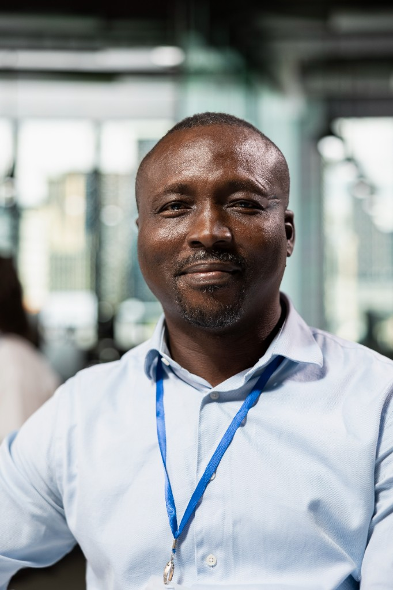

History of the BusinessZok Internet Café was founded to serve the residents of Thokoza who lacked convenient access to digital services. Starting as a small internet browsing station at the Impilo Shopping Centre, the café quickly grew to meet the community's needs for government service assistance, printing, and professional CV preparation. Over the years, Zok has become a trusted name in the area, known for its friendly service and commitment to making technology accessible to everyone regardless of their background. |
Mission StatementOur mission is to bridge the digital divide in Thokoza by providing affordable, reliable, and professional digital services to every member of our community. We strive to empower individuals through access to technology, helping them navigate government portals, prepare professional documents, and stay connected with the world. |
Vision StatementWe envision a Thokoza where every resident has seamless access to digital services and technology. Zok Internet Café aims to be the leading community technology centre in the region, expanding our services to include digital literacy training and youth empowerment programmes. |
Our Community Involvement
Church PartnershipZok Internet Café works closely with local churches in Thokoza to support community outreach programmes. Through this partnership, we offer discounted printing services for church newsletters and event materials, and provide free internet access for church administration tasks. |
Burial Society SupportWe proudly support local burial societies by assisting with the preparation of official documents, membership forms, and correspondence. Our team helps burial society members navigate government platforms such as Home Affairs and banking portals to ensure smooth processing of claims and paperwork. |
Our Team
|
 Zokwanda Mthembu Owner & Founder Zokwanda founded the café with a passion for helping his community access digital services with ease. |
Thandi Nkosi Senior Assistant Thandi specialises in government service applications and has helped hundreds of community members with SARS and SASSA queries. |
Sipho Dlamini Technical Support Sipho manages printing, scanning, and IT support, ensuring all equipment runs smoothly for our customers. |